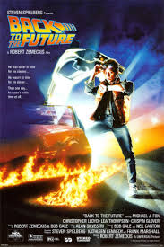
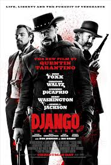

MEUS FILMES FAVORITOS🎬

Back to the Future
De Volta Para o Futuro é a história de um adolescente que viaja acidentalmente para 1955 em uma máquina do tempo e precisa garantir que seus pais, ainda jovens, se apaixonem para que ele possa existir no futuro.

Django Livre
Django Livre é um filme de faroeste que segue um escravo liberto que se junta a um caçador de recompensas alemão para resgatar sua esposa de um cruel dono de plantação no Mississippi.

Jurassic Park
Um bilionário cria um parque de dinossauros vivos, mas uma falha de segurança faz com que os predadores escapem. Agora, um pequeno grupo de visitantes precisa lutar para sobreviver e fugir da ilha cheia de feras pré-históricas.